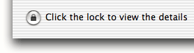
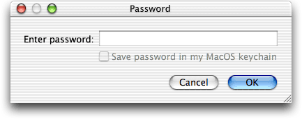
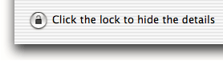
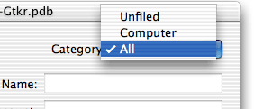

View Keyring is an application that displays the keyring database used by Keyring for PalmOS.
Your encrypted keyring database is backed up when you HotSync your Palm handheld. The encrypted database is called Keys-Gtkr.pdb and it will usually be in the folder: ~/Documents/Palm/Users/HotSync user name/Backups
To use View Keyring, simply open your encrypted keyring database using the File menu, or perhaps by dragging the database onto the View Keyring icon.
The window that appears lists all the names of the keys on the left. Just like Keyring for PalmOS, the keyring is locked so you will not be able to view any of the details of the keys.
To unlock the keyring, click the padlock icon at the bottom left of the window.

You will be prompted for a password. Enter the same password that you use in Keyring for PalmOS, and click OK.

When the keyring is unlocked, clicking on the name of any key will display that key's details on the right hand side of the window.
To lock the keyring again, click the padlock icon again.

Keyring for PalmOS uses the normal Palm categories to let you manage large keyrings more effectively. View Keyring supports these categories: choose which category you want to list from the popup menu at the top-right of the window.
